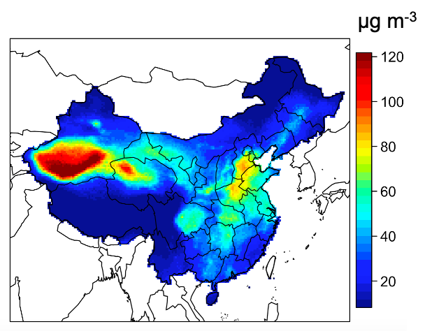
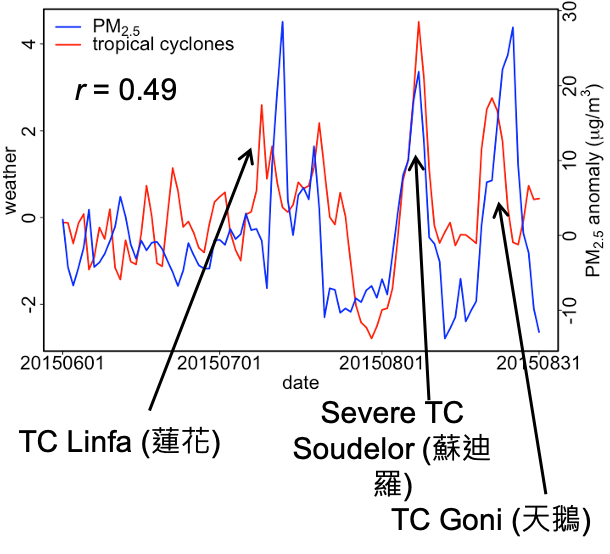
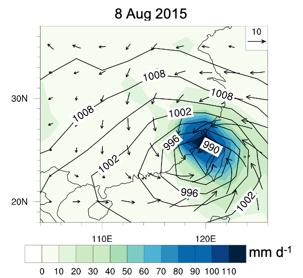

Home • Projects and publications • Teaching resources • Presentations • CV • Google Scholar
Music • Traveling • Languages • Cooking • Jiu-Jitsu
"I hold that popularization of science is successful if, at first, it does no more than spark the sense of wonder." -- Carl Sagan
My early days during undergrad focused on investigating the fine particulate matter (PM2.5) air quality over the globe, with a particular focus in East Asia. We know it's better to avoid living in highly polluted cities. WHO says a city should have annual mean PM2.5 concentration of smaller than 15 ug m-3. Now I mainly stay in Los Angeles, California which is one of the worst polluted cities of the US with an annual mean PM2.5 of ~15–20 ug m-3. However in most of China, the pollution easily exceed that level. The graphs below shows the observed annul mean PM2.5 from stations and from satellite. My city Hong Kong exceeds that level too!


My first project is about how the meteorological (weather) systems affects fine particulate matter (PM2.5) air quality, when I was an undergrad. This paper focuses on what weather systems improve or worsen PM2.5 air pollution, quantifying how the PM2.5 concentrations are sensitive to their arrivals. For example, my home city Hong Kong is constantly experiencing landfalls of tropical cyclones (TCs, or typhoons or hurricanes) from the Pacific Ocean in the summertime, carrying severe rains and gusts that damage HK. It is interesting that TCs may worsen air pollution, opposite to what people usually think that rains and winds clean the air. This is because TCs are low-pressure systems. Airflows converge at a TC eye, convect to higher altitude and then diverge outward and sink again at the peripheries of the TC. Thus, airflows around TCs are sinking downward and stagnant, unfavorable for air to convect and dilute, worsening air pollution problem.
The below image shows the statistical relationship between TC and PM2.5 concentration. The typhoon index (red) and PM2.5 concentration (blue) are in phase which means PM2.5 accumulates as typhoons approach HK, showing that PM2.5 can accumulates as much as 20–30 ug m-3 when typhoons approach HK. The right panel shows that the severe typhoon Soudelor brought more than 110 mm/day rainfall to southern China. To grasp how TCs in general can damage HK, you can see videos of HK under the recent super typhoon Mangkhut in 2018: link, link, link.

